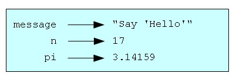

Значение — это одна из фундаментальных вещей, которыми манипулирует программа. Значения, которые мы уже видели в главе 1:
Эти значения относятся к разным типам: 2 — целое число, а "Hello, World!" — строка, представляющая собой последовательность символов. Строковые значения можно опознать по кавычкам, в которые они заключаются.
Предложение print работает не только со строками, но и с целыми числами.
>>> print 4
4
Если вы не уверены, какого типа то или иное значение, интерпретатор может подсказать вам.
>>> type("Hello, World!")
<type 'str'>
>>> type(17)
<type 'int'>
Строки (англ.: string) принадлежат типу str, а целые числа (англ.: integer) — типу int.
Не столь очевидно, что числа, имеющие целую и дробную части, относятся к типу float (англ.: плавать). Название типа данных объясняется тем, что такие числа в компьютере представляются в формате с плавающей точкой.
В России при записи чисел, имеющих целую и дробную части, принято отделять целую часть от дробной при помощи запятой, например: 3,2. Тогда как во многих других странах, а также в языках программирования (и Python не является исключением), целую часть числа от дробной отделяют при помощи точки. В таких случаях точку называют десятичной точкой.
>>> type(3.2)
<type 'float'>
Что касается запятой, то она является допустимым символом в Python, но используется для других целей. Хотя 3,2 — неверная запись числа, это допустимая конструкция Python. Если попробовать вывести значение 3,2, то получим:
>>> print 3,2
3 2
Python интерпретирует 3,2 как список из двух элементов: 3 и 2. Поэтому не пользуйтесь запятыми для записи чисел с целой и дробной частью!
А что можно сказать о таких значениях, как "17" и "3.2"? Они выглядят как числа, но они заключены в кавычки, как строки.
>>> type("17")
<type 'str'>
>>> type("3.2")
<type 'str'>
Это строки.
Строки в Python могут заключаться в одиночные (‘) или в двойные кавычки (”):
>>> type('This is a string.')
<type 'str'>
>>> type("And so is this.")
<type 'str'>
Строки, заключенные в двойные кавычки, могут содержать внутри одинарные кавычки, как в "Say 'Hello'", а строки, заключенные в одинарные кавычки, могут содержать двойные кавычки, как в 'Say "Hi"'.
Одна из сильнейших возможностей языков программирования — возможность работать с переменными. Переменная представляет собой имя, которое ссылается на значение.
Предложение присваивания создает новые переменные и присваивает им значения:
>>> message = "Say 'Hello'"
>>> n = 17
>>> pi = 3.14159
В этом примере три предложения присваивания. Первое присваивает строку "Say 'Hello'" новой переменной с именем message. Второе присваивает целое значение 17 переменной n, а третье присваивает число с плавающей точкой 3.14159 переменной pi.
Оператор присваивания = не следует путать со знаком равенства, хотя он и обозначается тем же самым символом. Оператор присваивания связывает имя, стоящее слева от него, со значением, находящимся справа от него. Вот почему вы получите ошибку, если введете:
>>> 17 = n
Можно изобразить переменные в виде имен со стрелками, указывающими на значения. Следующий рисунок показывает результат выполнения предложений присваивания, приведенных выше:
Предложение print также работает с переменными.
>>> print message
Say 'Hello'
>>> print n
17
>>> print pi
3.14159
В каждом случае результатом выполнения предложения print является вывод значения переменной. Переменные также имеют типы, и интерпретатор сообщит нам о них:
>>> type(message)
<type 'str'>
>>> type(n)
<type 'int'>
>>> type(pi)
<type 'float'>
Тип переменной в Python есть тип присвоенного ей значения.
Замечание: Для работы со строковыми значениями на русском языке, или любом другом языке, в котором используются символы, отличные от латинских, нужно познакомиться с тем, что такое кодировка и кое-чему дополнительно научиться. Подробности можно найти в Приложении A. Как научить Python русскому языку.
Программисты обычно выбирают значимые имена для своих переменных; имя описывает, для чего именно используется переменная.
Имена переменных могут быть произвольной длины. Они могут содержать буквы и цифры, но обязаны начинаться с буквы. Хотя допустимо использовать буквы верхнего регистра, по существующему соглашению они не используются. Если вы захотите их использовать, помните, что регистр имеет значение. Bruce и bruce — это две разные переменные.
В имени можно использовать символ подчеркивания (_). Он часто используется в именах, состоящих из нескольких слов, таких, как my_name или price_of_tea_in_china.
Если дать переменной недопустимое имя, это приведет к синтаксической ошибке:
>>> 76trombones = "big parade"
SyntaxError: invalid syntax
>>> more$ = 1000000
SyntaxError: invalid syntax
>>> class = "Computer Science 101"
SyntaxError: invalid syntax
Имя 76trombones недопустимо потому, что начинается не с буквы. Имя more$ неправильно потому, что содержит недопустимый символ доллара. А что не так с class?
Слово class является одним из ключевых слов Python. Ключевые слова определяют правила и структуру языка, и не могут использоваться как имена переменных.
В языке Python 31 ключевое слово:
| and | as | assert | break | class | continue |
| def | del | elif | else | except | exec |
| finally | for | from | global | if | import |
| in | is | lambda | not | or | pass |
| raise | return | try | while | with | |
| yield |
Можете держать этот список под рукой. Если интерпретатор пожалуется на одно из имен ваших переменных и вы не будете знать, почему, проверьте, нет ли его в этом списке.
Предложение — это инструкция, которую интерпретатор Python может выполнить. До сих пор мы видели два вида предложений: print и присваивание.
Если ввести предложение в строке с приглашением, Python выполнит его и отобразит результат, если таковой имеется. Результатом выполнения предложения print является выведенное значение. Предложение присваивания не производит результата.
Скрипт обычно содержит последовательность предложений. Если имеется более одного предложения, результаты появляются по мере выполнения предложений.
Например, скрипт
print 1
x = 2
print x
выводит
1 2
Обратите внимание, что предложение присваивания ничего не выводит.
Выражение есть комбинация значений, переменных и операторов. Если вы введете выражение в строке с приглашением, интерпретатор вычислит его и отобразит результат:
>>> 1 + 1
2
Вычисление выражения производит значение, вот почему выражения могут появляться в правой части предложения присваивания. Введенное значение само по себе является простым выражением, так же, как и имя переменной.
>>> 17
17
>>> x
2
Обратите внимание, что вычисление выражения и отображение результата — не то же самое, что печать значения выражения.
>>> message = "Say 'Hello'"
>>> message
"Say 'Hello'"
>>> print message
Say 'Hello'
Когда Python в интерактивном режиме отображает значение выражения, он использует тот же формат, который используется для ввода значения. В случае строк это означает, что кавычки также выводятся. А предложение print печатает значение выражения, которым в данном случае является содержание строки (без кавычек).
В скрипте выражение само по себе является допустимым предложением, но оно ничего не делает. Скрипт
17
3.2
"Hello, World!"
1 + 1
не выводит совсем ничего. Как изменить этот скрипт для того, чтобы отобразить значения всех четырех выражений?
Операторы — это специальные символы, обозначающие операции, например, такие, как сложение и умножение. Значения, с которыми работает оператор, называются операндами.
Вот несколько допустимых выражений Python, смысл которых более или менее ясен:
20 + 32
hour - 1
hour * 60 + minute
minute / 60
5 ** 2
(5 + 9) * (15 - 7)
Символы +, - и /, а также использование скобок для группировки операций, означают в Python то же, что и в математике. Звездочка * обозначает умножение, а две звездочки подряд ** обозначают возведение в степень. Пробелы вокруг операторов не обязательны, однако они облегчают чтение выражений.
Когда на месте операнда оказывается имя переменной, оно заменяется значением переменной, прежде чем выполняется операция.
Сложение, вычитание, умножение и возведение в степень ведут себя так, как вы и ожидаете, но вас может удивить деление. Следующая операция дает неожиданный результат:
>>> minute = 59
>>> minute / 60
0
Значением minute является 59, а 59, деленное на 60, дает 0.98333, а не 0. Полученный результат объясняется тем, что Python выполняет целочисленное деление.
Когда оба операнда целые, результат также должен быть целым. По существующему соглашению, результат целочисленного деления всегда округляется в меньшую сторону, даже когда большее целочисленное значение совсем рядом.
Поскольку нельзя получить дробный результат, пользуясь операцией /, то вычислим проценты:
>>> minute * 100 / 60
98
Вновь результат округлен в меньшую сторону, но, по крайней мере, теперь он приблизительно правильный.
Альтернативой является деление чисел с плавающей точкой. В главе 4 мы увидим, как преобразовывать целые числа в числа с плавающей точкой.
Когда в выражении имеется более одного оператора, порядок вычислений зависит от приоритета операций. Python использует для математических вычислений тот же приоритет операций, что используется в математике:
Нельзя выполнять математические операции над строками, даже если строки выглядят как числа. Следующие выражения недопустимы (предполагаем, что message имеет тип str):
message - 1
"Hello" / 123
message * "Hello"
"15" + 2
Интересно, что оператор + все же работает со строками, хотя и делает не то, чего можно было бы ожидать. Для строк оператор + выполняет конкатенацию, то есть соединение двух операндов вместе. Например:
>>> fruit = "banana"
>>> baked_good = " nut bread"
>>> print fruit + baked_good
banana nut bread
Пробел перед словом nut является частью строки, присваиваемой переменной baked_good, и необходим для того, чтобы между словами banana и nut в выводе программы оказался пробел.
Оператор * также работает со строками. Он выполняет повторение строки. Например, 'Fun' * 3 дает 'FunFunFun'. Один из операндов обязан быть строкой, другой — целым числом.
С одной стороны, такая интерпретация символов + и * имеет смысл по аналогии со сложением и умножением. Так же, как 4 * 3 эквивалентно 4 + 4 + 4, мы ожидаем, что "Fun" * 3 будет эквивалентно "Fun" + "Fun" + "Fun", и так оно и есть. С другой стороны, есть существенный момент, который отличает конкатенацию и повторение строк от сложения и умножения чисел. Можете сами отыскать свойство, которым обладают сложение и умножение чисел, но не обладают конкатенация и повторение строк?
В Python есть две встроенные функции для получения ввода с клавиатуры:
n = raw_input("Please enter your name: ")
print n
n = input("Enter a numerical expression: ")
print n
Пример выполнения этого скрипта может выглядеть так:
$ python tryinput.py
Please enter your name: Arthur, King of the Britons
Arthur, King of the Britons
Enter a numerical expression: 7 * 3
21
Каждая из этих функций позволяет внутри скобок указать приглашение для пользователя.
До сих пор мы рассматривали элементы программ — переменные, выражения и предложения — по отдельности, не затрагивая вопроса о том, как их комбинировать.
Одним из полезнейших свойств языков программирования является возможность брать маленькие строительные блоки и комбинировать их, или, другими словами, создавать из них композиции. Например, мы знаем как складывать числа и знаем, как выводить на экран. Оказывается, мы можем сделать обе эти вещи сразу:
>>> print 17 + 3
20
В действительности, сложение должно быть выполнено до вывода, так что действия, на самом деле, выполняются не одновременно. Важно то, что любое выражение, включающее числа, строки и переменные, может использоваться в предложении print:
print "Number of minutes since midnight: ", hour * 60 + minute
Можно также поместить произвольные выражения в правую часть предложения присваивания:
percentage = (minute * 100) / 60
Как видите, композиция позволяет записывать сложные вычисления кратко и выразительно.
Предупреждение: Существуют ограничения на то, где можно использовать определенные выражения. Например, левая часть предложения присваивания должна быть именем переменной, а не выражением. Поэтому следующее предложение неверно: minute + 1 = hour.
По мере того, как программы становятся больше и сложнее, они становятся труднее для чтения. Формальные языки плотные в том смысле, что небольшой фрагмент текста может нести много смысла, и, посмотрев на часть кода, бывает непросто понять, что именно этот код делает и почему.
Поэтому хорошей идеей является добавление к вашим программам заметок, которые бы на естественном языке объясняли, что делает программа. Такие заметки называются комментариями, и помечаются символом #:
# calculate elapsed hour percent
percentage = (minute * 100) / 60
В этом случае комментарий занимает целую строку. Можно также поместить комментарий в конец строки, содержащей предложение Python:
percentage = (minute * 100) / 60 # integer division!
Все, что следует за символом # до конца строки, игнорируется интерпретатором Python и не оказывает никакого действия на выполнение программы. Комментарии предназначены для самого программиста, или для тех программистов, которые будут читать этот код в будущем. В последнем примере комментарий напоминает читателю программы о том, что при вычислении выражения выполняется целочисленное деление.
Замечание: Для того, чтобы писать комментарии в скриптах на русском языке, необходимо специально позаботиться о кодировке, используемой для хранения текста вашей программы на Python. Подробности можно найти в Приложении A. Как научить Python русскому языку.
Предложение, которое присваивает значение имени (переменной). Слева от оператора присваивания = находится имя, справа — выражение, которое вычисляется интерпретатором Python и затем присваивается имени. Разница между левой и правой частями предложения присваивания часто сбивает с толку начинающих программистов. В следующем предложении присваивания:
n = n + 1
n играет разные роли по разные стороны от =. На правой стороне n выступает как значение, являющееся частью выражения, которое будет вычислено и затем присвоено имени, находящемуся на левой стороне.
Выясните, что произойдет, если попробовать напечатать предложение присваивания:
>>> print n = 7
А что будет в этом случае?
>>> print 7 + 5
А в этом?
>>> print 5.2, "this", 4 - 2, "that", 5/2.0
Можете сформулировать общее правило о том, что может идти вслед за print? Что возвращает предложение print?
Возьмем предложение: All work and no play makes Jack a dull boy. Сохраните каждое слово в отдельной переменной, затем выведите предложение в одну строку, используя print.
Добавьте скобки в выражение 6 * 1 - 2 чтобы изменить его значение с 4 на -6.
Поместите символ комментария # перед строкой кода, которая до этого выполнялась, и посмотрите, что произойдет, если запустить программу снова.
Разница между input и raw_input состоит в том, что input вычисляет введенную строку как выражение, а raw_input не делает этого. Попробуйте выполнить следующее в интерактивном режиме и объясните результат:
>>> x = input()
3.14
>>> type(x)
>>> x = raw_input()
3.14
>>> type(x)
>>> x = input()
'The knights who say "ni!"'
>>> x
А что будет, если в этом примере не использовать кавычки?
>>> x = input()
The knights who say "ni!"
>>> x
>>> x = raw_input()
'The knights who say "ni!"'
>>> x
Объясните результат.
Запустите интерпретатор Python и введите bruce + 4 в строке с приглашением. Интерпретатор выдаст сообщение об ошибке:
NameError: name 'bruce' is not defined
Присвойте значение переменной bruce так, чтобы вычисление bruce + 4 давало 10.